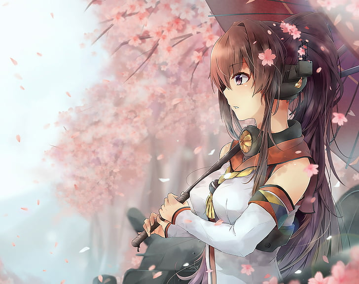
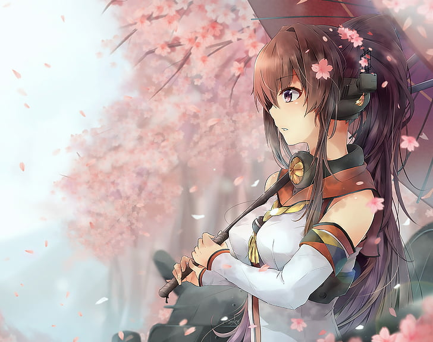

Quem é Yamato?
Yamato pode ser 2 coisas: 1- um navio de guerra; 2- uma personagem de um jogo e de um anime.
Eu vou apresentar um pouco de cada uma dessas possibilidades para você, meu caro e respeitavel leitor.
Yamato, o navio japones.
O Yamato (大和) foi um navio couraçado operado pela Marinha Imperial Japonesa na Segunda Guerra Mundial,
construído pelos estaleiros do Arsenal Naval de Kure. Foi a primeira embarcação da Classe Yamato, sendo
junto com seu irmão Musashi os mais pesados e poderosos navios de guerra já construídos na história.
Nomeado em homenagem à província de Yamato, ele foi projetado para combater a frota de couraçados
numericamente superior da Marinha dos Estados Unidos, o principal rival do Império do Japão no oceano
Pacífico. A construção do Yamato começou em novembro de 1937, sendo formalmente comissionado uma semana
depois do Ataque a Pearl Harbor, em dezembro de 1941. A embarcação serviu como nau-capitânia da Frota
Combinada, no ano de 1942, com o almirante Isoroku Yamamoto comandando a frota de sua ponte, durante a
desastrosa Batalha de Midway. O Musashi assumiu a liderança no início do ano seguinte e o Yamato passou 1943
e boa parte de 1944 movendo-se entre as bases Truk e Kure, principalmente respondendo às ameaças
norte-americanas. O navio esteve presente na Batalha do Mar das Filipinas, em junho de 1944, porém não
participou do embate.
A única vez que o Yamato disparou seus canhões principais contra alvos inimigos foi em outubro de 1944,
durante a Batalha do Golfo de Leyte, quando foi enviado para enfrentar forças norte-americanas que estavam
invadindo as Filipinas. As embarcações japonesas acabaram por recuar quando estavam à beira da vitória,
acreditando na verdade estarem enfrentando uma frota inteira de porta-aviões, em vez dos pequenos
porta-aviões de escolta, que eram a única coisa que separava os couraçados dos principais navios de
transporte de tropas.
O equilíbrio de poder no Pacífico ficou definitivamente contra os japoneses no decorrer do ano 1944, com sua
frota assolada no início do ano seguinte, tanto pela falta de suprimentos quando de combustível. O Yamato
foi enviado para Okinawa em abril de 1945, em uma tentativa desesperada de conter o avanço norte-americano,
recebendo ordens para proteger a ilha até a morte. Submarinos e aeronaves inimigas avistaram a força tarefa
ao sul de Kyushu, com o couraçado sendo afundado por bombardeiros e torpedeiros, junto com a maior parte de
sua tripulação.
Tipo de navio:
Classe:
Deslocamento:
Maquinário:
Comprimento:
Boca:
Calado:
Propulsão:
Velocidade:
Autonomia:
Armamento:
1941:
1945:
Blindagem:
Cinturão:
Conveses:
Torres de artilharia:
Barbetas:
Anteparas:
Aeronaves:
Tripulação:
Couraçado
Yamato
71 659 t
12 caldeiras 4 turbinas a vapor
263 m
38,9 m
11 m
4 hélices triplas - 150 000 cv (110 000 kW)
27 nós (50 km/h)
7 200 milhas náuticas a 16 nós (13 300 km a 30 km/h)
9 canhões Tipo 94 de 460 mm
12 canhões Tipo 3º Ano de 155 mm
12 canhões antiaéreos Tipo 89 de 127 mm
24 canhões automáticos Tipo 96 de 25 mm
4 metralhadoras pesadas M1929 de 13,2 mm
9 canhões Tipo 94 de 460 mm
6 canhões Tipo 3º Ano de 155 mm
24 canhões antiaéreos Tipo 89 de 127 mm
162 canhões automáticos Tipo 96 de 25 mm
4 metralhadoras pesadas M1929 de 13,2 mm
410 mm
200 a 230 mm
250 a 650 mm
380 a 560 mm
300 a 355 mm
7 hidroaviões (Nakajima E8N ou Nakajima E4N)
2500–2800
Yamato a personagem de anime e jogos

Yamato é uma menina tímida, respeitosa e educada, mas também obstinada e corajosa. Ela frequentemente tem que
corrigir o Almirante sobre ser chamada de "Hotel Yamato", algo a que ela é sensível. Ela também está
incomodada com o fato de não ter experiência no campo de batalha, apesar de ser o navio mais poderoso da
frota.
No anime, Yamato finalmente faz sua aparição no episódio 8, supervisionando a gestão da Truk Lagoon Base. A
base, entretanto, parece mais um hotel quatro estrelas do que um ancoradouro na linha de frente. Devido às
suas funções de gerenciamento, Yamato quase não tem experiência no campo de batalha. No entanto, a verdade é
que, apesar de ser essencialmente o navio mais poderoso da frota, ela é muito cara em termos de recursos para
uma batalha.
Ela aparece na batalha contra Airfield Princess, o inimigo que se transforma em Midway Princess.
A batalha termina com o sucesso das Fleet Girls.
 
